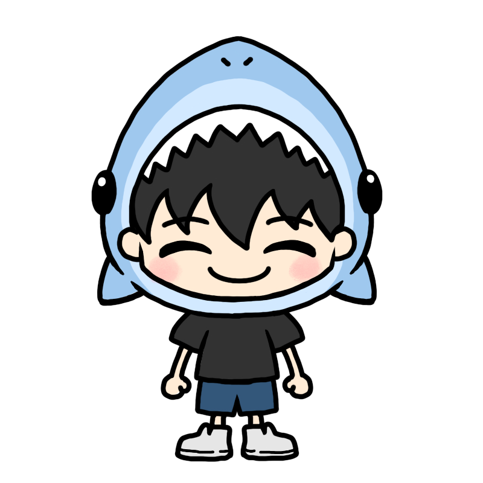
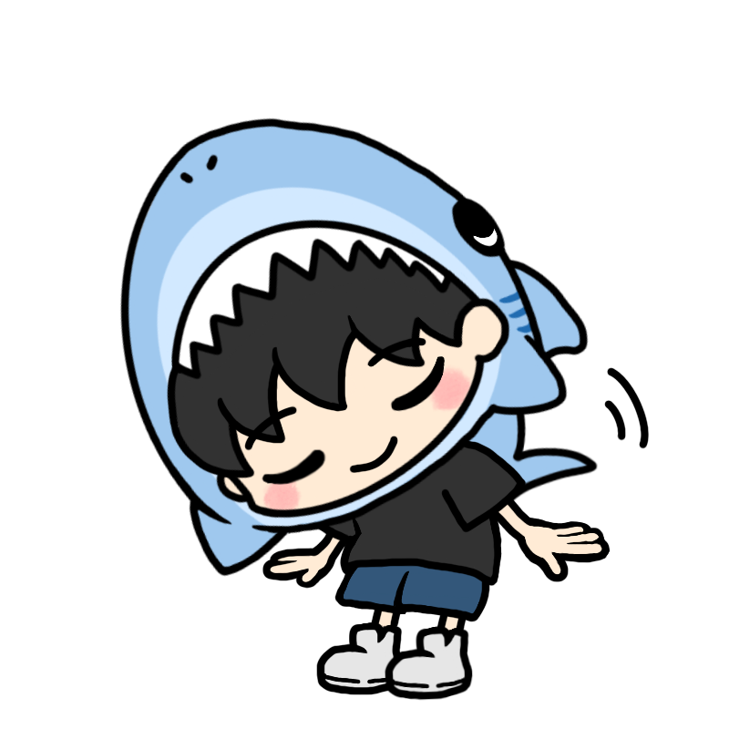
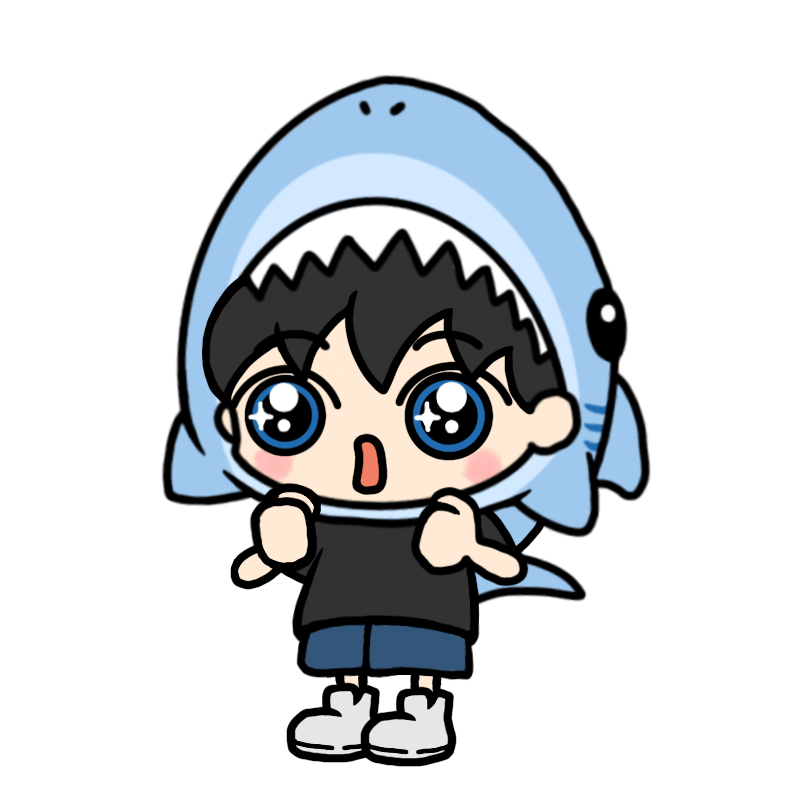
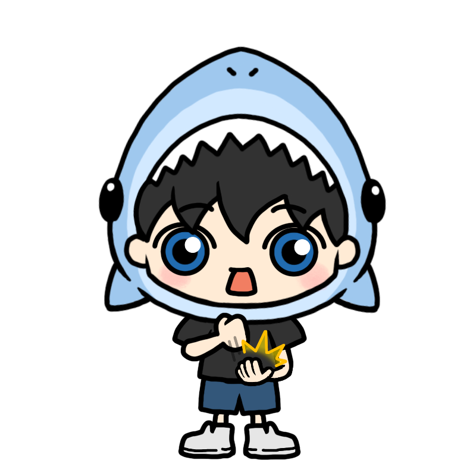
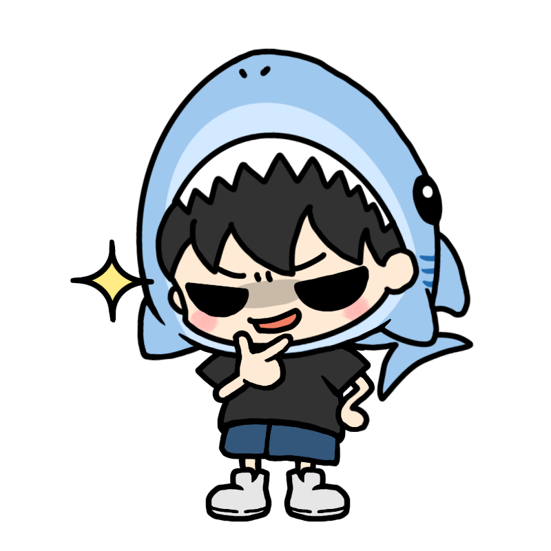
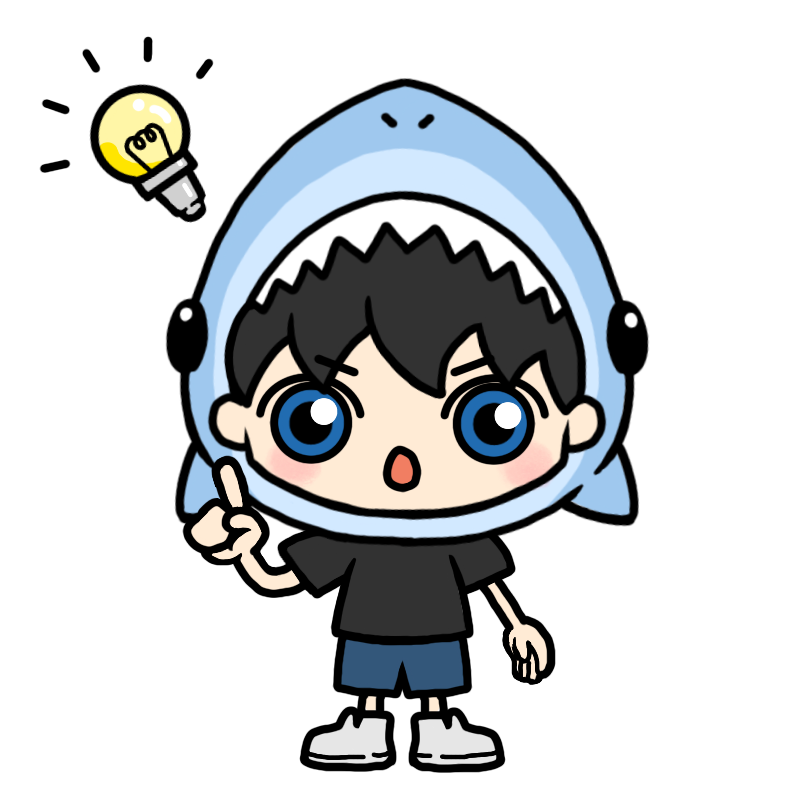
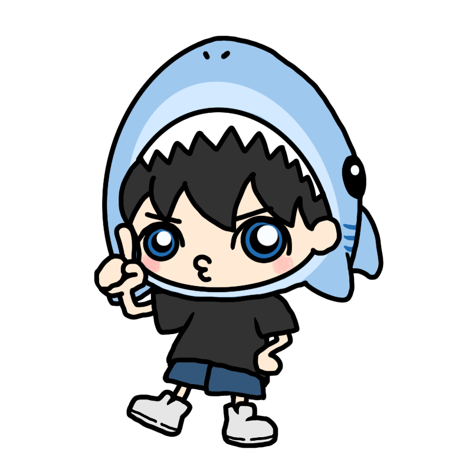
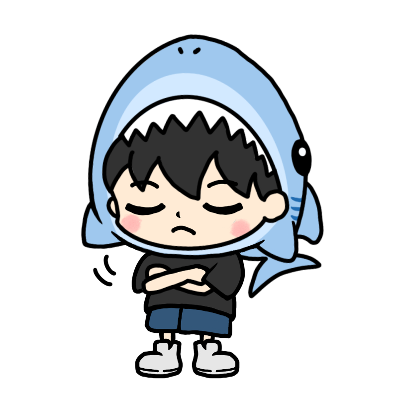

1
🌞
起床直後にカーテンを開ける
目覚めたら、まず最初にカーテンを開けましょう。朝の光が目に入ることで、眠りを誘うホルモンが止まり、脳に「活動開始！」のスイッチが入ります。

2
☀️
20〜30分の日光浴
自然の光を浴びることで、体内時計が完璧にリセットされます。気分を上げる「セロトニン」が作られ、夜にはそれが「良い睡眠の素」に変わります。

3
💧
起床直後の水分補給
カラカラの体にコップ一杯の水を流し込みましょう。脳と内臓が目覚め、代謝がアップします。少量の塩やレモン汁を入れると吸収率がさらに高まります。

4
🏃♀️
15分間の朝の運動
軽い運動で、脳を育てる栄養素（BDNF）が分泌されます。これによって、その日一日の集中力や記憶力が大きく向上します。

5
🚿
30秒からの冷水シャワー
温かいシャワーの最後に、30秒だけ冷たい水を浴びてみましょう。体がシャキッと目覚めるだけでなく、免疫力もアップして風邪をひきにくくなります。

6
🍳
高タンパク質の朝食（25g以上）
卵、ギリシャヨーグルト、魚、プロテインなどでタンパク質を摂りましょう。集中力ややる気の元になる脳内物質が作られ、筋肉も育ちます。

7
🎶
ポジティブな音楽を聴く
お気に入りのアップテンポな曲を聴くと、脳からやる気物質（ドーパミン）が出ます。一日を前向きな気持ちでスタートさせるための、簡単な方法です。

8
🧠
重要な決断は起床1時間後に行う
脳の機能がピークに達し、最も冷静で的確な判断ができるゴールデンタイムです。進路や人間関係など、大事なことはこの時間に考えましょう。

9
✍️
午前中に一番困難なタスクをやる
意志の力が最も強い午前中に、一番面倒な勉強や課題を片付けてしまいましょう。大きな達成感で、午後の活動にも勢いがつきます。

10
🕺
30分ごとに3分間、体を動かす
長時間座りっぱなしだと、脳の血流が悪くなり、パフォーマンスが落ちます。30分に一度立ち上がって少し歩くだけで、集中力がリセットされます。